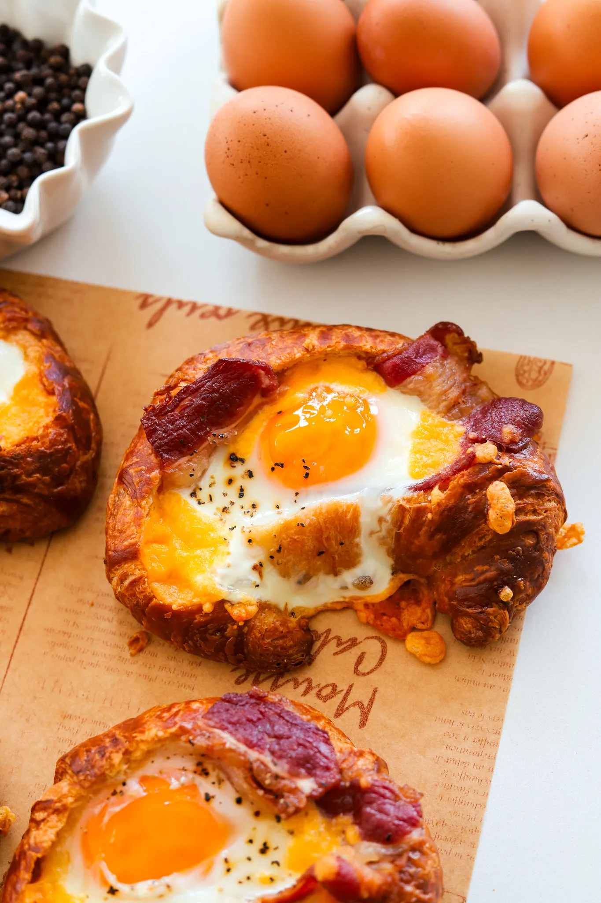

BREAKFAST
Prep Time: 15 mins
Cook Time: 20 mins
Total Time: 35 mins
Yeilds: 8
If you're looking for a unique and delicious twist on a classic breakfast, these croissant egg boats are perfect for you. With one version filled with a savory mix of tomatoes, basil, and feta, and the other featuring a hearty combination of bacon and cheddar, there's something for everyone. These croissant egg boats are easy to prepare and sure to impress at your next brunch!
JUMP TO RECIPEIf you're looking for a unique and delicious twist on a classic breakfast, these croissant egg boats are perfect for you. With one version filled with a savory mix of tomatoes, basil, and feta, and the other featuring a hearty combination of bacon and cheddar, there's something for everyone. These croissant egg boats are easy to prepare and sure to impress at your next brunch!
First, let’s get our croissants ready. Preheat your oven to 350°F (175°C). Slice the top off each croissant and gently carve out the center, creating a boat-like shape. Be careful not to cut through the bottom or sides—you want to create a perfect little vessel for our delicious fillings. Once you’ve carved out the center, press down to make a well, ensuring there’s enough space for the eggs and other ingredients. This step is crucial as it creates a sturdy base to hold all the tasty ingredients without spilling over. You can buy croissants from anywhere but my favorites are from Costco or Sam’s Club.
For our first method, we’ll start with the classic bacon and cheddar combination. Add shredded cheddar cheese to the bottom of each croissant well. Place a strip of beef bacon on top of that into the well of each croissant. You can cut the strip of bacon in half to make it easier to place inside. No need to pre-cook the bacon—it will cook perfectly in the oven and infuse the croissant with its savory flavor. Now, crack an egg into each croissant boat, directly on top of the bacon and cheese. Season with salt and black pepper to taste. Add a little bit more cheddar cheese on top. You can opt to only add cheese on top and not in the bottom of the well too. The cheese on top will get more crispy while the cheese underneath will get ooey and gooey so pick your preference or go for both
Place the filled croissants on a baking sheet and pop them in the oven. Bake for 15-20 minutes, or until the eggs are set and the croissants are golden brown. Make sure to take them out before the egg yolks completely harden. The best texture is a jammy yolk – not too runny and not too firm
BREAKFAST
If you're looking for a unique and delicious twist on a classic breakfast, these croissant egg boats are perfect for you. With one version filled with a savory mix of tomatoes, basil, and feta, and the other featuring a hearty combination of bacon and cheddar, there's something for everyone. These croissant egg boats are easy to prepare and sure to impress at your next brunch!
Prep Time: 15 mins
Cook Time: 20 mins
Total Time: 35 mins
Yeilds: 8
PRINT RECIPEMETHOD #1
METHOD #2